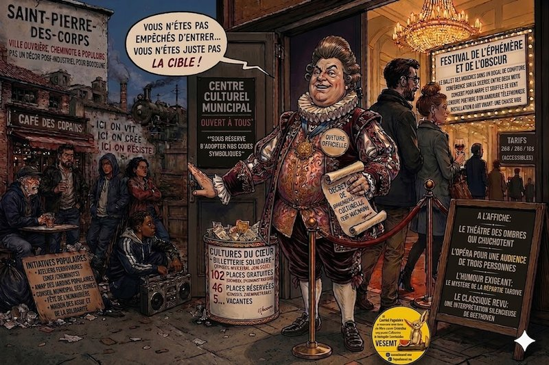

À Saint-Pierre-des-Corps, la saison culturelle du Centre Culturel Communal ressemble à ces restaurants qui écrivent « cuisine authentique » sur l’ardoise avant de servir une mousse de panais déstructurée à 18 euros. Papier glacé, opéra contemporain, cirque québécois, « créations hybrides », humour « exigeant mais accessible » : tout indique que la ville ne veut plus seulement proposer des spectacles, mais surtout montrer qu’elle appartient désormais au club très distingué des communes culturellement fréquentables.Inviter des artistes reconnu·es n’a évidemment rien d’un problème. Le problème commence quand une politique culturelle cesse de parler à celles et ceux qui vivent là pour commencer à séduire celles et ceux qu’on aimerait voir arriver (1).
Et c’est précisément ce que racontent les chiffres eux-mêmes.
Lors du conseil municipal de juin 2023 (2), l’adjoint à la culture Mickaël Chapeau reconnaissait que, sur 102 places gratuites proposées la saison précédente via le dispositif de billetterie solidaire porté par l’association Cultures du Cœur, seules 46 avaient été réservées. Plus de la moitié des places destinées aux publics « empêchés et précaires », comme il aime à les appeler, avec des trémolos condescendants dans la voix, sont donc restées vacantes. Non parce que les habitant·es des classes populaires détesteraient soudainement la culture, mais parce qu’une partie d’entre elles et eux ne se reconnaît plus dans celle qu’on leur propose.
Le plus révélateur reste peut-être cette phrase prononcée par l’élu lui-même : les publics « empêchés », explique-t-il, ne viennent pas parce qu’« ils n’ont jamais mis les pieds chez nous ». Tout est contenu dans ce « chez nous ». Car un équipement culturel municipal censé appartenir à tout le monde finit ici par fonctionner comme un espace socialement codé, où certain·es habitant·es entrent avec le même naturel qu’un livreur Uber Eats dans un vernissage à l’Opéra.
À force de parler « d’offre culturelle », de « médiation » et de « pluridisciplinarité », la culture populaire disparaît derrière une logique d’attractivité. On ne pense plus la culture à partir des habitant·es existant·es, mais à partir des habitant·es désiré·es. La nuance est fondamentale. On préfère encore et toujours privilégier l’accès du plus grand nombre aux institutions culturelles, plutôt que de chercher à encourager chez chacun·e ses libertés culturelles et à être ainsi mieux reconnu·e dans sa dignité et son humanité. Parce que, voyez-vous, les pauvres n’auraient pas de culture, c’est bien connu ! Mais grâce à celle légitimée par les dominant·es, peut-être, et encore, s’ils et elles font des efforts , pourront-ils et elles un peu s’émanciper. Mais pas trop quand même : il ne s’agirait pas non plus d’inverser les rôles, comme le pensait le sociologue Pierre Bourdieu, avec le risque, à la clé, de perdre sa précieuse « autorité sociale » pour continuer à dominer les classes populaires.
En somme, le schéma n’est guère nouveau. La sacro-sainte démocratisation culturelle, désirée par André Malraux il y a déjà 60 ans, a encore de beaux jours devant elle, et surtout à Saint-Pierre-des-Corps. Une ville qui fut pourtant ouvrière, cheminote, profondément marquée par l’éducation populaire et les pratiques collectives, donnant parfois l’impression d’assurer l’avant-garde de la Fête de l’Humanité.
Aujourd’hui, tout se passe comme si cette mémoire devenait embarrassante, presque trop bruyante, trop visible, pas assez « instagrammable ».
VESEMT l’avait déjà dénoncé à la suite du conseil municipal de février 2026 (3), ainsi que lors du précédent mandat, en évoquant depuis plusieurs années une orientation « de droite et libérale » de la municipalité, marquée, selon nous, par le démantèlement progressif des politiques sociales locales et le manque d’ambition pour la Rabaterie. La politique culturelle actuelle semble prolonger cette logique : transformer l’image de la ville avant de transformer sa composition sociale, en assumant fièrement que la fréquentation du CCC ne touche que 36 % de Corpopétrussien·nes.
Car la gentrification moderne ne commence pas avec les loyers. Elle commence avec les symboles. On change le langage, les références, les lieux valorisés. On explique ensuite aux habitant·es historiques qu’ils et elles devraient « s’ouvrir ». En réalité, on leur fait surtout comprendre que leurs propres pratiques culturelles deviennent peu à peu indésirables.
Le café populaire devient du « bruit ». Les regroupements deviennent des « problèmes d’occupation de l’espace ». Les marchés « dégradent le cadre de vie ». Quant aux cultures populaires spontanées, rap, street art, sociabilités de quartier, , si toutefois elles ne sont pas récupérées et rendues légitimes au préalable par l’intelligentsia culturelle, elles ne sont tolérées qu’une fois nettoyées, subventionnées et transformées en décoration urbaine pour brochures métropolitaines réalisées par des créateur·rices reconnu·es, mais surtout pas par des Corpopétrussien.es
Le plus ironique dans cette affaire, c’est que même les nouveaux bourgeois attirés par cette transformation finiront probablement par y perdre. Nantes, Le Mans, Bordeaux ou certaines parties de Tours l’ont déjà montré : à force de transformer les villes en vitrines culturelles permanentes, on finit par fabriquer des centres urbains où plus personne ne vit vraiment. Des villes impeccables, propres, sécurisées… et totalement mortes. Même celles et ceux qui ont payé cher pour y habiter finissent par comprendre qu’ils et elles ont acheté une ambiance PowerPoint.
Pourtant, un changement s’est produit en 2015 : le législateur a inscrit, dans la loi NOTRe (4), la nécessité pour les collectivités locales, comme pour l’État, de respecter les droits culturels des personnes, garantissant à chacun·e le droit de pouvoir participer à la vie culturelle à partir de sa propre culture, de ses pratiques et de son histoire. Elle introduit dans le droit français la Convention européenne sur la valeur du patrimoine culturel pour la société, dite « Convention de Faro », signée en 2005 (5).
Pas à condition d’adopter les codes symboliques des catégories déjà dominantes, mais bel et bien en défendant plus largement les valeurs portées par ces droits humains fondamentaux. Cela demande, au fond, d’avoir un peu « de culture de la culture » et de comprendre que les droits culturels ne sont pas simplement un « droit à fréquenter », mais avant tout la garantie d’une liberté effective et essentielle pour chacun·e de faire vivre sa propre culture et d’être reconnu·e dans sa dignité.
À Saint-Pierre-des-Corps, on continue malgré tout de parler « d’ouverture » et « d’accessibilité ». Comme souvent, les mots restent à gauche pendant que les politiques glissent doucement à droite.
À Saint-Pierre-des-Corps, le 24/04/2026.
Le Comité populaire et néanmoins bienveillant de Vivre (surtout) Ensemble et (si possible) Solidaires en Métropole Tourangelle.
(1) : https: //vesemt.org/?p=659
(2) : https://saintpierredescorps.fr/sites/default/files/mairiestpierre/fichiers/pv_cm_spdc_28-06-2023.pdf
(3): https://vesemt.org/?p=603
(4) Loi n° 2015-991 du 7 août 2015 portant Nouvelle Organisation Territoriale de la REpublique
(5) https://www.coe.int/fr/web/culture-and-heritage/faro-convention
Commentaires